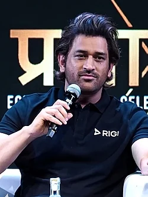

Mahendra Singh Dhoni (born 7 July 1981) is a former Indian international cricketer and one of the most successful captains of the Indian national cricket team. He is known for his calm personality, sharp cricketing mind, and exceptional finishing ability. Under his captaincy, India won the ICC Cricket World Cup in 2011, the ICC World Twenty20 in 2007, and the ICC Champions Trophy in 2013. Dhoni is also regarded as one of the greatest wicketkeeper-batsmen in cricket history. He has played for the Chennai Super Kings in the Indian Premier League and led the team to multiple IPL titles.
